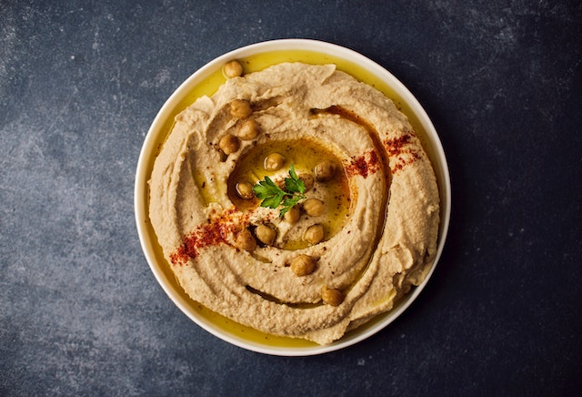

Houmous
Le houmous est une préparation culinaire du Proche-Orient, composée notamment de purée de pois chiches et de tahini (purée de sésame). Il s'agit d'un plat typique de la cuisine arabe, juive, arménienne et levantine, la recette traditionnelle du houmous daterait du XVe siècle et serait apparue dans différentes régions de l'Empire Ottoman.
Il est possible de préparer un houmous avec d'autres légumes secs tels que des lentilles, des haricots blancs ou noirs. On peut aussi y ajouter des herbes, d'autres légumes comme le chou-fleur ou l'artichaut et des purées d'oléagineux différentes. Et laisser ainsi libre cours à son imagination.

- Bien rincer les pois chiches et égoutter. Si vous avez le temps, pelez les pois un à un, pour un houmous plus digeste et à la texture plus fine : il suffit de rouler les rouler entre le pouce et l’index et la peau s’enlève d’elle-même. Mixer les pois chiches avec 1 verre de leur eau de cuisson (sinon de l’eau), dans un robot mixeur, sinon au moulin à légumes (ce qui a l’avantage de retirer la peau des pois chiches).
- Ajouter le jus de citron — ou directement sa chair (citron pelé, épépiné). Ajouter l’huile d’olive et le tahin.
- Continuer de mixer. Pendant ce temps, éplucher l’ail, ôter le germe et écraser avant de l’ajouter avec le cumin. Mixer jusqu’à obtenir une pâte onctueuse, bien lisse. La pâte doit être lisse, bien crémeuse, fluide mais doit pouvoir se tartiner. Goûter au fur et à mesure.
- Saupoudrer de persil haché et de quelques pois chiches. Servir frais. S’il en reste, garder au frais recouvert d’huile d’olive ou dans un bol hermétique (jusqu’à 4-5 jours).